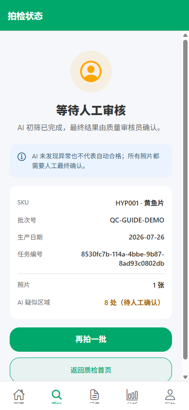

产品 SKU
按编码或名称搜索，确认与现场产品一致。
Quality Control / Label Inspection
六扇门：从管理员按手机号开户、员工本人设密和登录，到录入 SKU、拍摄包装照片、AI 初筛、人工逐图标注及训练数据整理。
无论 AI 找到 0 处还是多处疑似区域，所有照片都会进入人工审核。
WEB ACCOUNT ONBOARDING
这一步在 Web 管理端完成。手机号既是白名单身份，也是员工后续唯一登录账号；角色权限由管理员邀请决定。
工厂总监或具备人事读写权限的管理员先登录 Web 管理端，再从左侧进入“人事管理 → 账号邀请”。管理员使用自己的账号密码登录，不使用待开户员工的手机号。
点击“创建账号邀请”，输入员工真实手机号和姓名。手机号会固定成为登录账号，不再另起用户名。
选择“质量检验员”。角色决定能看到的质检功能，员工注册时只能领取该角色，不能自行改成管理员。
保存后应显示“邀请待领取/待注册”。白名单只在当前工厂有效，手机号和工厂必须同时匹配。
管理员只配置手机号、姓名、工厂和角色。密码必须由员工本人在手机注册时设置，管理员不代存、不索取。
BEFORE START
先准备三项业务信息，再整理拍摄区域。信息不全时不要先随便选择。
按编码或名称搜索，确认与现场产品一致。
照生产批次原样录入，不用临时简称替代。
默认是当天；补拍历史批次时要主动修改。
LOGIN
打开 App 后点击“登录”，账号填写白名单手机号，密码填写注册时由本人设置的密码。
管理员不会发放或查看你的明文密码。忘记密码请使用找回流程；不要把密码写在纸箱、群聊截图或这份公开指南里。
ENTRY
登录后确认顶部是“质检工作台”。首页第一张卡显示待审核数量，点击即可进入；需要新拍检时点击下方“发起标签拍检”。
顶部应显示“质检工作台”和当前质检员姓名。
点击橙色“待我审核”卡，直接进入待人工审核列表。
点击“发起标签拍检”，再录入 SKU、批次和照片；“查看质检记录”只用于追踪历史。
BATCH INFO
这三项会和照片、AI 候选及人工标注绑定，录错会影响追溯和后续训练数据。
找不到 SKU 时先联系主管维护产品，不要选择“看起来差不多”的产品。
SKU 编码和名称、批次号、生产日期必须三项全部正确。
PHOTO & SUBMIT
手机 App 中按钮显示“拍照”；浏览器演示环境显示“选择照片”，后续流程一致。
彩标和白标所在边缘都要能看见，避免完全被上一盒遮挡。
减少过度堆叠；盒子太多、太小会增加漏检。
避开顶灯强反光，手稳后再拍，必要时换角度补一张。
上传过程中保持页面打开。网络失败时按页面提示“重试提交”，不要重新建立同一批次。
AI SCREENING → REVIEW QUEUE
提交后先等待 AI 初筛。任务变为“待人工审核”后，从“待我审核”打开任务；候选数量不是最终缺标数量。

进入照片前确认 SKU、批次、生产日期和照片数都与现场一致。
AI 可能多框、错框或漏框，必须逐张、逐框人工判断。
状态为“AI 失败·人工检查”时不要跳过，仍然按全图人工检查流程处理。
CHECK AI CANDIDATES
橙色框是 AI 候选。先看框内盒子，再用照片下方当前操作卡给出人工判断。
确认确实缺白标、缺彩标或无法判断时，点击“确认：对应类型”。
框内没有问题或框错位置时点击“拒绝疑点”，不要为了省事直接确认。
双指放大或双击缩放照片；放大后拖动画面查看标签边缘，再确认结论。
ADD OR CORRECT FRAMES
轻点缺标盒所在位置会出现绿色人工框和类型菜单。框只要尽量贴近问题盒，不需要框住文字。
新增绿色人工框；选择“缺白、缺彩或不清”。
拖动框本体移动；拖动右下角圆点只改变框大小。
放大后拖动画面；再次点击框上的小标签可编辑或删除。
框应落在具体问题盒附近。误点可拖动修正；不需要的人工框点击小标签后选择“删除”。
PHOTO CONCLUSION & SUBMIT
所有框完成判断后，再扫一遍整张照片。只有完成本图结论，底部按钮才会进入下一张或最终提交。
点击“下一张未审核”，顶部缩略图的数字和感叹号会帮助定位。
确认顶部进度为全部完成，再点击一次“提交人工审核”。提交后结果成为服务端人工真值。
确认缺白标或缺彩标后，根据照片位置找出对应盒子，补贴后按现场流程复核。
ARCHIVE / BACKUP / TRAINING APPROVAL
质检员提交只完成“人工真值”，不会自动训练。后续备份、归档和训练确认由 Web 管理端分开完成。
导出当前任务的照片地址、SKU、批次、AI 候选和人工标注。备份不会改变训练状态。
归档只是从日常整理列表移出，不会删除数据；需要时可在“归档记录”中恢复。
只有具备系统管理权限的技术管理员能“批准训练/拒绝训练”。批准也只允许导出，不会自动启动本地训练或发布模型。
TROUBLESHOOTING
先保留当前页面和任务编号，再按下面顺序处理。
让管理员核对手机号是否与白名单完全一致、邀请是否属于当前工厂、状态是否仍为“邀请待领取”。不要临时换手机号，也不要让员工自己选择工厂或管理员角色。
账号必须填写注册时使用的手机号。密码由员工本人设置；忘记时使用“忘记密码”，不要让管理员新建同手机号的重复账号。
联系管理员检查白名单邀请角色是否为“质量检验员”以及工厂质检模块是否启用。员工端不能自行增加权限。
检查是否已经选择 SKU、填写批次号、选择生产日期，并至少添加 1 张照片。
不要退出或重新建同一批次。网络恢复后使用页面上的“重试提交”；系统会尽量复用已经创建的任务和上传完成的照片。
提交前删除该缩略图并重拍；减少盒子数量，换一个角度，让彩标和白标所在边缘露出来。
仍然进入“待我审核”逐张检查，不要把“0 处”直接当作合格。发现漏检时轻点照片补框，再给出本图结论。
检查是否还有橙色 AI 框未确认/拒绝，或绿色人工框还没有选择缺白、缺彩或不清。全部框处理后，再点击本图结论。
拖动框本体移动，拖动右下角圆点缩放；点击框上的小标签重新选类型，不需要的人工框可选择“删除”。
停留在当前页面并保留草稿，检查网络后重试。不要重新新建同一批次；仍失败时记录 SKU、批次和时间并联系管理员。
停止提交并联系主管或系统管理员维护 SKU。不要选择相似产品替代。
30-SECOND CHECK
创建信息、照片和逐图结论都确认后再提交，可以减少无效拍检和错误训练数据。